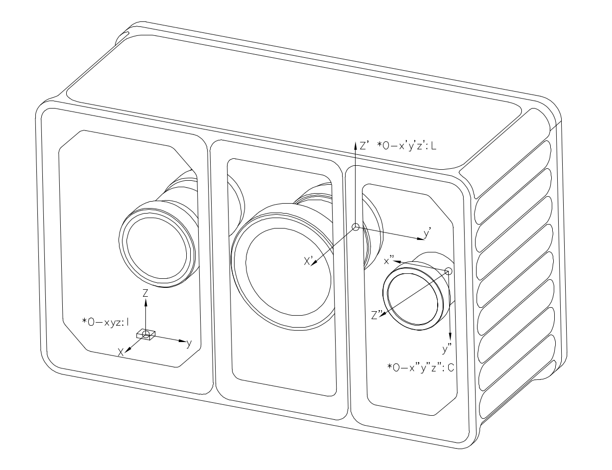
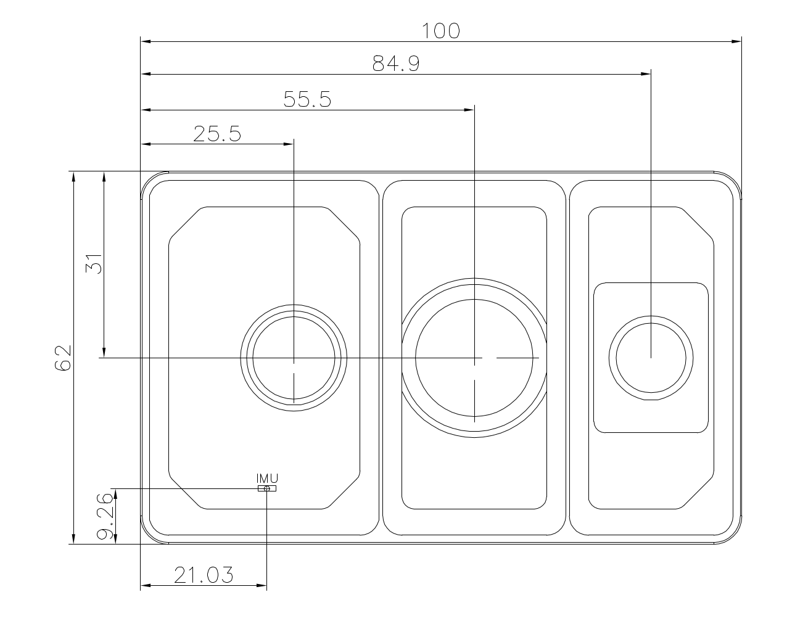
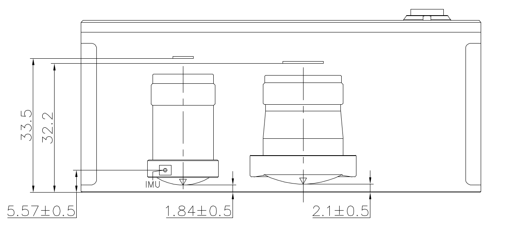

5. 数据输出
5.1 坐标系定义
Odin 1直角坐标的定义如下图所示，I 为imu坐标系，L为点云坐标系， C为相机坐标系。



5.2 外参描述
外参符号说明
下面使用 \(\mathbf{T}^{\text{A}}_{\text{B}}\) 来表示坐标转换，具体含义为:
\[\mathbf{P}_{\text{A}} = \mathbf{T}^{\text{A}}_{\text{B}} \cdot \mathbf{P}_{\text{B}}\]其中 \(P_A\) 和 \(P_B\) 分别表示物体在A坐标系和B坐标系下坐标。
Camera - LiDAR
外参 \(\mathbf{T}^{\text{camera}}_{\text{lidar}}\) 不同机器存在差异，请在驱动程序启动后，在config/calib.yaml获取（Tcl_0），具体信息请查看驱动。
IMU - LiDAR
外参 \(\mathbf{T}^{\text{imu}}_{\text{lidar}}\) 是固定值，数值如下：
\[\mathbf{T}^{\text{imu}}_{\text{lidar}} = \begin{bmatrix} 1 & 0 & 0 & -0.02663 \\ 0 & 1 & 0 & 0.03447 \\ 0 & 0 & 1 & 0.02174 \\ 0 & 0 & 0 & 1 \end{bmatrix}\]其它
- 如果需要 Camera 到 IMU 的外参，请根据上述自行计算。
5.3 内参说明
内参我们主要讨论相机的内参，lidar的内参不考虑
5.3.1 Odin1 相机内参
- 获取内参的方法：连接设备，运行驱动，会在/ws/src/odin1_ros_driver/config中生成calib.yaml文件，每个设备略有不同
- calib.yaml内容如下：
#O1-P010100079
cam_num: 1
img_topic_0: /camera/rgb
Tcl_0: [
-0.00745, -0.99997, -0.00018, 0.03127,
-0.00938, 0.00025, -0.99996, 0.01817,
0.99993, -0.00745, -0.00938, -0.00955,
0, 0, 0, 1
]
cam_0:
cam_model: FishPoly
image_width: 1600 # 1920
image_height: 1296 # 1080
k2: 5.0379242441551616e-05
k3: -7.4415257914767799e-03
k4: -4.1365539417288134e-02
k5: 5.5346546592564667e-02
k6: -3.3479736619860797e-02
k7: 5.9355751390599035e-03
p1: 0.
p2: 0.
A11: 7.3735683773268692e+02
A12: -4.0977897450998052e-01
A22: 7.3729158717678535e+02
u0: 7.9437192080462398e+02
v0: 6.6625886729029014e+02
isFast: 0
numDiff: 3000
maxIncidentAngle: 120
5.3.2 相机模型描述
Odin1 RGB 相机模型与内参
本文档描述 Odin1 RGB 相机的投影模型及内参参数，供工程参考。
1 相机投影模型
Odin1 RGB 使用多项式鱼眼投影模型描述大视场成像。
去畸变后，该模型可简化为标准针孔模型。
2 多项式鱼眼模型
2.1 投影公式
给定相机坐标系下的三维点：
\[\mathbf{P_c} = (X, Y, Z)^T\]计算入射半径：
\[r = \sqrt{X^2 + Y^2}\]计算入射角：
\[\theta = \arccos\left(\frac{Z}{\|\mathbf{P_c}\|}\right) = \arccos\left(\frac{Z}{\sqrt{X^2 + Y^2 + Z^2}}\right)\]多项式径向映射（注意包含 $\theta$ 线性项）：
\[\theta_d = \theta + k_2\theta^2 + k_3\theta^3 + k_4\theta^4 + k_5\theta^5 + k_6\theta^6 + k_7\theta^7\]投影到畸变平面：
\[x_d = \frac{\theta_d}{r} \cdot X\] \[y_d = \frac{\theta_d}{r} \cdot Y\]2.2 仿射变换
\[\begin{bmatrix} u \\ v \end{bmatrix} = \begin{bmatrix} A_{11} & A_{12} \\ 0 & A_{22} \end{bmatrix} \begin{bmatrix} x_d \\ y_d \end{bmatrix} + \begin{bmatrix} u_0 \\ v_0 \end{bmatrix}\]参数说明
| 参数 | 说明 |
|---|---|
| k2–k7 | 多项式畸变系数 |
| A11 | X 轴焦距（水平缩放） |
| A12 | 非正交补偿（skew） |
| A22 | Y 轴焦距（垂直缩放） |
| u0, v0 | 主点坐标 |
切向畸变未建模：
\[p_1 = p_2 = 0\]2.3 去畸变后的针孔模型
去畸变后：
\[u = f_x \frac{X}{Z} + c_x\] \[v = f_y \frac{Y}{Z} + c_y\]内参矩阵：
\[K = \begin{bmatrix} f_x & 0 & c_x \\ 0 & f_y & c_y \\ 0 & 0 & 1 \end{bmatrix}\]去畸变后畸变系数为零。
2.4 坐标系
Odin1 RGB 遵循 OpenCV 相机坐标系约定：
- X → 右
- Y → 下
- Z → 前
右手坐标系。
2.5 工程注意事项
- 去畸变不改变外参。
- 高精度重投影请使用多项式鱼眼模型。
- 检测、SLAM、融合等算法框架请使用去畸变后的针孔模型。
- 当 $\theta \to 0$ 时可能出现数值不稳定（$r \to 0$ 导致除零）。
2.6 总结
Odin1 RGB 相机模型由以下两部分组成：
- 多项式鱼眼投影（原始模型）
- 去畸变针孔表示（算法兼容模型）
请根据应用场景选择合适的模型。
5.4 数据说明
- raw point cloud(odin1/cloud_raw) has the following fields:
float32 x // X axis, in meters
float32 y // Y axis, in meters
float32 z // Z axis, in meters
uint8 intensity // Reflectivity, range 0–255
uint16 confidence // Point confidence, actual value range from 0 to around 1300 in typical scene, higher value means more reliable. Recommanded filtering threshold is 30-35, should be adjusted accordingly.
float32 offset_time // Time offset relative to the base timestamp unit: s